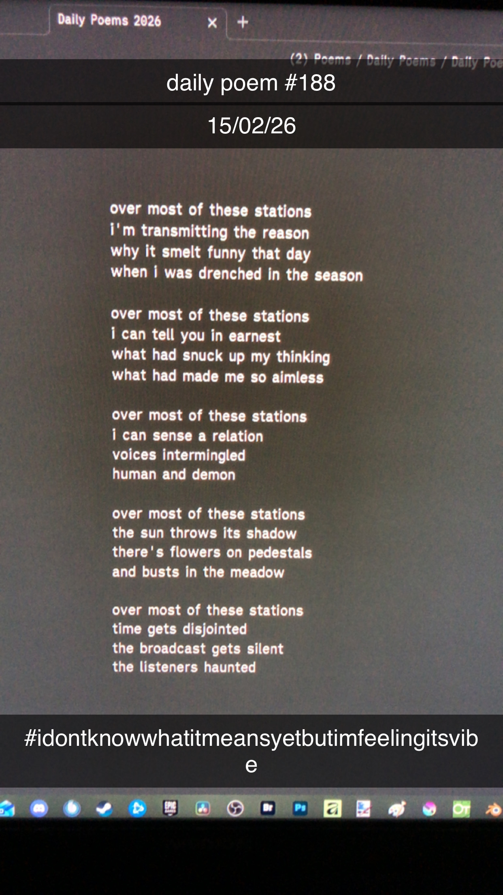

Over Most of These Stations
[188]Over most of these stations
I'm transmitting the reason
Why it smelt funny that day
When i was drenched in the season
Over most of these stations
I can tell you in earnest
What had snuck up my thinking
What had made me so aimless
Over most of these stations
I can sense a relation
Voices intermingled
Human and demon
Over most of these stations
The sun throws its shadow
There's flowers on pedestals
And busts in the meadow
Over most of these stations
Time gets disjointed
The broadcast gets silent
The listeners haunted
